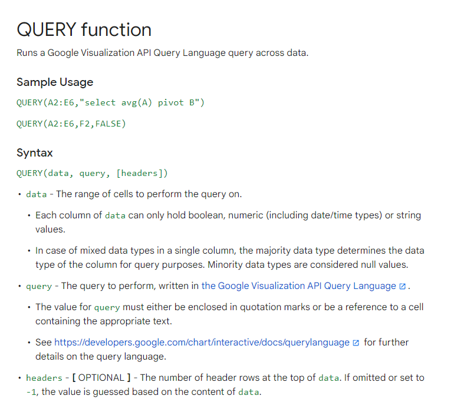

"Just use the query formula"
The Power Of The Query Formula
Any Google Sheets fans? If so… any query formula fans? In my opinion, the query formula in Google Sheets is one of the most powerful spreadsheet functions in existence. So what exactly is the query formula and why is my blog named after it? Directly from Google:

What this basically means is you can take a dataset and aggregate, filter, manipulate, and more, in a language similar to SQL. There are a bunch of different operators you can use inside the query itself and they have to follow a specific order. The list is:
You can aggregate on that data with SUM, COUNT, AVG, MAX, and MIN. Let’s look at a quick example. This is a very simple dataset of sales for various types of media.
Let’s say we wanted to aggregate this data and find the total sales per item. We could use this formula to yield the result.
=query(A1:C9, "select B,sum(C) group by B")
Let’s also change the name of the sales column, and add average sales, and a count of sales per item. We should also format these values into currency. The final formula and result is:
=query(A1:C9,"select B,count(B),sum(C),avg(C) group by B label sum(C) 'Total Sales', avg(C) 'Average Sales', count(B) 'Count of Sales' format sum(C) '$0.00', avg(C) '$0.00'")
Expensive items obviously. Pretty cool though! Why is this special? Well, for our data section we have A1:C9. We could make this A:C, and then remove the nulls. I’ll explain why this would be beneficial.
=query(A:C,"select B,count(B),sum(C),avg(C) where A is not null group by B label sum(C) 'Total Sales', avg(C) 'Average Sales', count(B) 'Count of Sales' format sum(C) '$0.00', avg(C) '$0.00'")
This is beneficial because now, when a new row of data is added, this table will automatically update the values.
So, now we have a table that automatically updates with as many aggregates as we need. Another cool thing we can do is incorporate dropdown filters into our query. If you think about it, the query is a string of text. You can concatenate text together using ‘&’. If we create a data validation drop down for the list of items, then we can filter based on the cell value. Let’s say our dropdown is going to go into cell L1.
=query(A:C,"select B,count(B),sum(C),avg(C) where A is not null and B contains '"&L1&"' group by B label sum(C) 'Total Sales', avg(C) 'Average Sales', count(B) 'Count of Sales' format sum(C) '$0.00', avg(C) '$0.00'")
All we added was ‘and B contains ‘“&L1&”’’. This is essentially just ending the string, concatenating the cell value, and continuing the rest of the query. It’s important to include single quotes(‘ ‘) before the double quotes(“ “) so that the cell value will be recognized as a string. This is the result:
Now let’s talk about where and how this can be applied. In one of my previous jobs, there was a lot of work done inside Google Sheets. I spent a lot of time working with survey data specifically and stakeholders wanted to actually read the responses to the questions in an efficient manner. I created a dashboard that was a series of dropdown filters so they could filter down on which group of respondents they wanted to see at any given time. I’m going to make a real quick and brief example of that. Here’s our fake data thanks to the randbetween function and ChatGPT:
We can see that there’s a unique ID for each respondent, two different dates, regions, sessions, completion status, and their responses.
Here’s the layout for the dashboard(not my best work but it makes for a good quick example):
I’ll save the explanation on creating the formula but here it is:
=query(surveydata!A:G,"Select * where A is not null "
&if(isblank(C18),""," and B = date '"&text(datevalue(C18),"yyy-mm-dd")&"'")&"
"&if(isblank(D18),""," and C contains '"&D18&"'")&"
"&if(isblank(E18),""," and D contains '"&E18&"'")&"
"&if(isblank(F18),""," and E contains '"&F18&"'")&"
"&if(isblank(G18),""," and F contains '"&G18&"'")&"")
Pretty big one but not too bad. What this formula is doing is saying “if the filter cell is blank, leave the query blank, if not then add ‘and C contains [CELL VALUE]’”. The cell value would be the desired filter value.
Next we just add that formula in the dashboard, add a little chart showing the median course rating, and give a count for the total responses.
We can see that the response output changes with every filter allowing the user to see all the responses, or a very specific group. Very cool.
I can’t stress enough how powerful this formula is. You can use vlookups, arrayformulas, filters, and much more in the [data] portion of the query formula. Truly eye-opening and is the reason why I prefer Google Sheets over Excel. I encourage any Sheets user to look into this and “just use the query formula.” Goodbye!